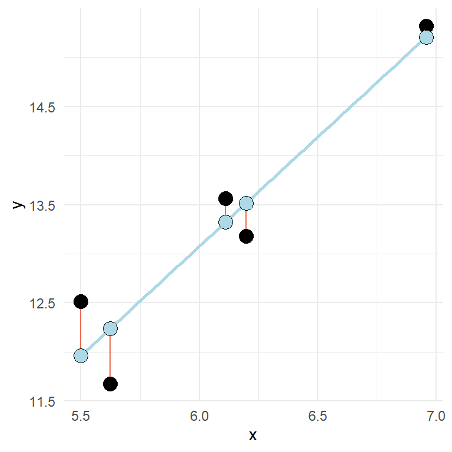
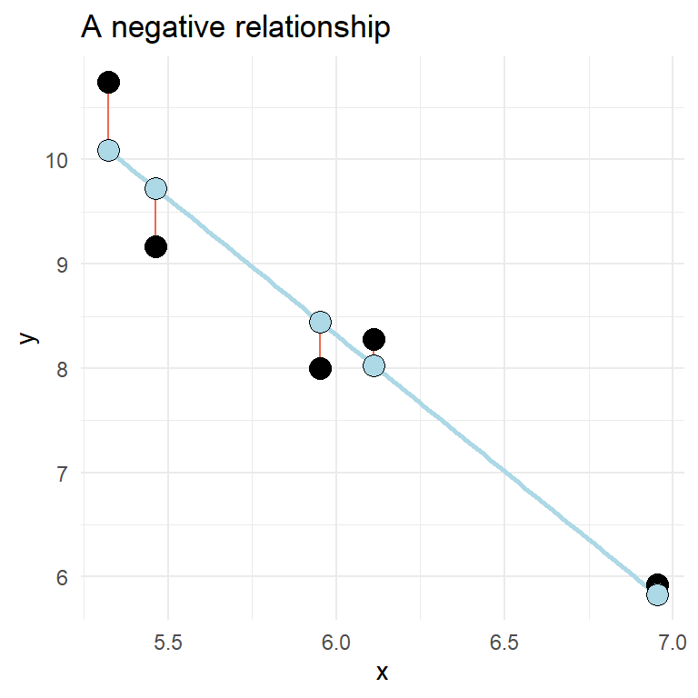
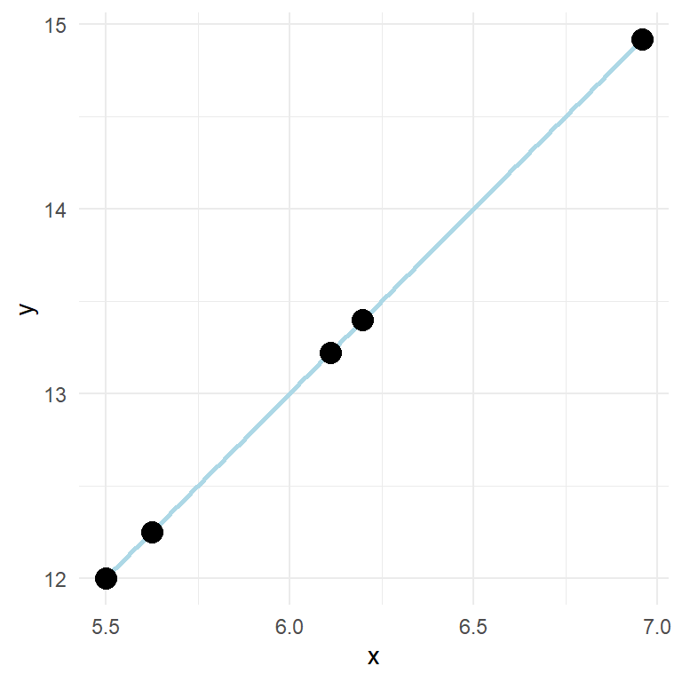

Chapter 12 The linear model
12.1 Resources
- Chapter X in Spiegelhalter..
- Ch 8 in OpenIntro and Ch. 15 in Navarro Learning statistics with R deals with regression models.
12.2 Straight lines
A straight line can be fitted to describe a relationship between two variables. This relationship can also be described with a formula:
\[y = \beta_0 + \beta_1x\]
Where \(y\) is the outcome variable, \(\beta_0\) is the intercept, \(\beta_1\) is the slope and \(x\) is the predictor.

In the model shown above, y increases two units for every unit increase in x. If we measure something in nature and find such a fit (every point on the line) we should check our calculations as perfect relationships are seldom found in measured variables. This because of measurement error and other non measured variables that affect the relationship. We quantify these unmeasured sources of variation in an additional term in the formula:
\[y = \beta_0 + \beta_1x + \epsilon\]
\(\epsilon\) is the error-term. Here we quantify the distance from the best fit line for every observation. The best fit line is the line that minimizes the squared residuals (\(e_i^2\), in this case \(e\) is used to signify the error as it is observed data). A more realistic regression model contains some error.

In the above figure, the error or residual is the distance (red lines) from the predicted (blue points) to the observed (black points).
A two variable relationship can be positive (increase in y as x increases) or negative (y decreases as x increases).

12.3 Fitting regression models in R
The data above can be fitted in R using the lm() function. We get far by specifying a formula and data where the variables used in the formula are stored. We can store a model as an object and inspect the results by using the summary() function.
df <- data.frame(x = c(5.461851, 6.110910, 6.952707, 5.321775, 5.951849),
y = c(9.168992, 8.273749, 5.926797, 10.745583, 7.999151))
fit <- lm(y ~ x, data = df)
summary(fit)##
## Call:
## lm(formula = y ~ x, data = df)
##
## Residuals:
## 1 2 3 4 5
## -0.5561 0.2460 0.1005 0.6542 -0.4445
##
## Coefficients:
## Estimate Std. Error t value Pr(>|t|)
## (Intercept) 24.0085 2.6873 8.934 0.00296 **
## x -2.6151 0.4488 -5.827 0.01007 *
## ---
## Signif. codes: 0 '***' 0.001 '**' 0.01 '*' 0.05 '.' 0.1 ' ' 1
##
## Residual standard error: 0.5789 on 3 degrees of freedom
## Multiple R-squared: 0.9188, Adjusted R-squared: 0.8917
## F-statistic: 33.95 on 1 and 3 DF, p-value: 0.01007The summary that you get from the model above will show the value of the coefficient (estimates, standard error, t-value and a p value), we will get some information about the spread of the residuals and values that tells us the overall fit of the model.
The estimates from a summary in a two variable situation tells the value of \(y\) when x is zero and the increase in \(y\) for every unit increase in \(x\). Can you identify these from the output above?
Two-variable regression (univariate regression) is closely related to the correlation. Try out the code cor.test(df$x, df$y) and see what similarities you find between the outputs.
In the model we use in the example, the intercept is quite “far away” from the rest of the data (see figure below).

Let’s fit some real data. We might wonder if there are some characteristic that is related to VO2max. For example, do taller individuals have greater VO2max? It is always a good idea to start with a plot before we do the modeling.
library(readxl);
library(tidyverse)
library(exscidata)
data("cyclingstudy")
cyclingstudy %>%
filter(timepoint == "pre") %>%
select(subject, group, VO2.max, height.T1) %>%
ggplot(aes(height.T1, VO2.max)) + geom_point(size = 3, fill = "lightblue", shape = 21) +
labs(x = "Height (cm)",
y = expression("VO"["2max"]~(ml^-1~min^-1))) +
theme_minimal()There might be a positive relationship, what do you think? You might get a clearer picture if you use geom_smooth(method = "lm") in your ggplot command, try it out!
To quantify the relationship between Height (height.T1) and VO2max (VO2.max) we can fit a linear model. Below I store the model in an object called m1. Before we look at the results of the regression model, we should think about the data and inspect the fit to see if it matches with our assumptions. Assumptions that generally needs to be filled in order to get a valid regression model are:
Independent observations. This is an assumption about the design of the study and the data at hand. If we have observations that are related, the ordinary linear model will give us biased conclusions. As an example, if we collect data from the same participants over time we will not have independent observations and this will lead to pseudo-replication, lower standard errors and biased confidence intervals. Another way to see it is that non-independent observations will give non-independence of the residuals which is the mechanism that creates bad inference (as the residuals are used to estimate the sampling distribution of parameters).
Linear relationship. In the basic case, we expect a linear trend that can be described with a straight line. If the relationship is curve-linear, we may adjust the fit using e.g. polynomials.
Normal residuals. This condition might be violated when there is an outlier.
Constant variance. This assumption says that we want to be equally wrong all along the explanatory variable. If we predict \(y\) with greater error at large \(x\) we have heteroscedasticity (unequal variance), if we are “equally wrong” we have homoscedasticity (equal variance).
12.3.0.1 Code for fitting a preliminary model
library(tidyverse)
cyc_select <- cyclingstudy %>%
filter(timepoint == "pre") %>%
select(subject, group, VO2.max, height.T1)
m1 <- lm(VO2.max ~ height.T1, data = cyc_select)12.3.1 Linear relationship
The plot can be used to see if the relationship is generally linear. We do not have that many data points, but a curve-linear relationship is not evident.
12.3.2 Constant variance
This assumption can be checked by creating a residual plot. We will do it here by hand to see how it works. The model is fitted and stored in the object m1. From this object we can use the residuals() function to get every residual. We can add this data to the data set by creating a new variable called resid.
cyc_select$resid <- residuals(m1)
cyc_select$fitted <- fitted(m1)It is common practice to plot the residuals against the fitted values.
library(tidyverse)
cyc_select %>%
ggplot(aes(fitted, resid)) +
geom_hline(yintercept = 0) +
geom_point(size = 3, fill = "lightblue", shape = 21) +
theme_minimal()Sometimes you will see standardized residuals. This is the residual divided by the standard deviation of the residual. We can create this standardization like this:
cyc_select %>%
mutate(st.resid = resid/sd(resid)) %>%
ggplot(aes(fitted, st.resid)) +
geom_hline(yintercept = 0) +
geom_point(size = 3, fill = "lightblue", shape = 21) +
theme_minimal()Looking at the plot tells us that observation with the largest error is about 2.5 standard deviation away from its predicted value. We are suffering a bit from having a small amount of data here. But the residual plot does not invalidate the regression.
12.3.3 Normal residuals
To check if the residuals are normal, we can create a plot that plot every observed residual against its theoretical position in a normal distribution. This is a quantile-quantile plot. The show the concept we may sample data from a normal distribution and plot it against the theoretical qunatile.
set.seed(1)
ggplot(data.frame(y = rnorm(100, 0, 1)), aes(sample = y)) + stat_qq(size = 3, fill = "lightblue", shape = 21) + stat_qq_line() + theme_minimal()The code above samples 100 observations. They are plotted against their “theoretical values.” If the values (points) follows the straight line, we have data that follows a normal distribution. The same can be tested from our fit.
cyc_select %>%
mutate(st.resid = resid/sd(resid)) %>%
ggplot(aes(sample = st.resid)) +
stat_qq(size = 3, fill = "lightblue", shape = 21) +
stat_qq_line() +
theme_minimal()The resulting plot looks nice. Except from one or two observation, we have normally distributed values.
12.3.4 Independent observations
This is an assumption about the data and design of the study. We created the model based on values only from the pre-training test. If we would have used all observations (all time-points) we would have violated the assumption.
12.4 Check the results
To examine the results of the analysis we can use the summary() function.
summary(m1)The output will show you the following things:
- Residuals which contains the minimum, maximum, median and quartiles of the residuals. The tails should be approximately similar above and below the median.
- Coefficients contains the estimates and their standard errors. As we have fitted a univariate model, we only see the increase in VO2max with every unit increase of
height.T1and the intercept. - R-squared shows the general fit of the model, this is a value between 0 and 1 where 1 shows if the data fits perfectly.
12.5 A note about printing the regression table
We might want to print the regression table in our reports. To do this in a nice way we might want to format the output a bit. This can be done using a package called broom. broom is not part of the tidyverse so you might need to install it. The package has a function called tidy that takes model objects and makes the into nice data frames that are more easy to work with. Together with the knitr package we can create tables for use in the report. In the knitr package contains the function kable that makes nice tables with some arguments to format the table.
library(knitr); library(broom)
tidy(m1) %>%
print()To get a table out of this for the report we need to set a chunk option, results = 'asis'. The kable() function is used to create the table. It can take several arguments that we can use to customize the table. Below I set the following settings col.names = c("", "Estimate", "SE", "t-statistic", "p-value") which names the column of the table, digits = c(NA, 1, 1, 2, 3)which sets the number of decimals of numeric variables.
library(knitr); library(broom)
tidy(m1) %>%
kable(col.names = c("", "Estimate", "SE", "t-statistic", "p-value"),
digits = c(NA, 1, 1, 2, 3))| Estimate | SE | t-statistic | p-value | |
|---|---|---|---|---|
| (Intercept) | -2596.3 | 2936.5 | -0.88 | 0.388 |
| height.T1 | 41.1 | 16.4 | 2.51 | 0.022 |
The kable() function is easily extended using another package called kableExtra(). See the vignettes for more details.
12.6 Interpreting the results
From our model we can predict that a participant with a height of 175 cm will have a VO2max of 4597 ml min-1. We can do this prediction by combining the intercept and slope term multiplied with 175 as x-value. Remember the equation:
\[Y = \beta_0 + \beta_1X\]
As we have estimated this relationship we get the \(\beta\)’s from the regression table and can input 175 instead of X.
Actual values from the regression table can be accessed from a tidy table created with broom. But we can also use coef() to get the coefficients. Using confint() we will get confidence intervals for all parameters in a linear model.
# Coefficients
coef(m1)
# Confidence intervals
confint(m1)The confidence interval can be used for hypothesis testing as can p-values from the summary table. The p-values tests against the null-hypothesis that the intercept and slope are 0. What does that mean in the case of the intercept in our model. The estimated intercept is -2596 meaning that when height is 0 the VO2max is -2596. We are very uncertain about this estimate as the confidence interval goes from -8766 to 3573. We cannot reject the null. Think a minute about what information this test may give in this situation.
The slope estimate has a confidence interval that goes from round(confint(m1)[2], 1) to 75.5 which means that we may reject the null-hypothesis at the 5% level.
12.7 Do problematic observations matter?
In the residual plot we could identify at least one potentially problematic observation. We can label observations in the residual plot to find out what observation is problematic.
cyc_select %>%
mutate(st.resid = resid/sd(resid)) %>%
ggplot(aes(fitted, st.resid, label = subject)) +
geom_hline(yintercept = 0) +
geom_point(size = 3, fill = "lightblue", shape = 21) +
geom_label(nudge_x = 25, nudge_y = 0) +
theme_minimal()The plot shows that participant 5 has the largest residual. If we would do the model without the potentially problematic observation we can see if this changes the conclusion of the analysis.
library(readxl); library(tidyverse)
cyclingStudy_reduced <- cyclingstudy %>%
filter(timepoint == "pre",
subject != 5) %>%
select(subject, group, VO2.max, height.T1)
m1_reduced <- lm(VO2.max ~ height.T1, data = cyclingStudy_reduced)
delta_beta <- 100 * (coef(m1_reduced)[2]/coef(m1)[2] - 1)The delta beta above calculates the percentage change in the slope as a consequence of removing the observation with the greatest residual. Another way to look for potential influential data points would be to check the scatter plot.
cyclingstudy %>%
filter(timepoint == "pre") %>%
select(subject, group, VO2.max, height.T1) %>%
ggplot(aes(height.T1, VO2.max, label = subject)) +
geom_smooth(method = "lm", se = FALSE) +
geom_point(size = 3, fill = "lightblue", shape = 21) +
labs(x = "Height (cm)",
y = expression("VO"["2max"]~(ml^-1~min^-1))) +
geom_label(nudge_x = 1, nudge_y = 0) +
theme_minimal()The plot will show participant 5 has not got a lot of “weight” in the slope. If an equally big residual would have been present in the far end of the range of the height variable, removing it would have made more difference. Since the observation is in the middle of the x’s, it wont be that influential.
There are many ways of doing diagnostics for the ordinary linear model in R. The simplest way is to write plot(m1), this will produce four graphs.
Residuals vs. Fitted shows the fitted (or predicted) values against the residuals. If we would have tried to fit a linear trend to curve linear data, we would have catch it here. We want equal spread all along the fitted values. We test the assumption of homoscedasticity and linear trend.
Normal Q-Q shows residual theoretical quantiles against the observed quantile. The points should to a large degree be on, or close to the line. We test the assumption of normality in the residuals.
Scale location similarly to the residual plot, we can assess assumptions of heteroscedasticity and if we find the trend in the data. We are looking for a straight, flat line and points equally scattered around it.
Residual vs. Leverage is good to find influential data points. If a point is outside the dashed line it changes the conclusion of the regression to a large degree. Remember that we identified participant 5 as a potential problematic case. The Residual vs. leverage shows that number 5 has a large residual value but no leverage, meaning that it does not change the slope of the regression line.

12.8 A more intepretable model
The intercept in model m1 is interpreted as the VO2max when height is zero. We do not have any participants with height zero nor will we ever have. A nice modification to the model would be if could get the intercept to tell us something useful. We could get the model to tell us the VO2max in the tallest or shortest participant by setting them to zero. Even more interesting would be to get the VO2max at the average height.
We accomplish this by mean centering the height variable. We remove the mean from all observations, this will put the intercept at the mean of heights as the mean will be zero.
library(readxl); library(tidyverse)
cyc_select <- cyclingstudy %>%
filter(timepoint == "pre") %>%
select(subject, group, VO2.max, height.T1) %>%
mutate(height.mc = height.T1 - mean(height.T1)) # mean centering the height variable
m2 <- lm(VO2.max ~ height.mc, data = cyc_select)Examine the fit, what happens to the coefficients?
12.9 An exercise
We think that body dimensions influence physiological characteristics. To test if if the stature (height.T1) influence maximum ventilatory capacity (VE.max) fit a regression model, check model assumptions and interpret the results.
12.10 Categorical predictors and multiple regression
We have up to now used a single continuous predictor to predict a dependent variable. We will now show that the ordinary regression models can be the same as other statistical tests, they can be extended and modified. This will show that the ordinary regression model is very flexible.
12.10.1 Linear models can be used instead of t-tests
Last week we performed t-tests. These are tests of differences from zero in a one-sample case or differences between groups with paired or unpaired observations. We calculated the difference between pre- and post-training in squat-jump to test against the null-hypothesis that there was no difference between these two time-points.
cyc_select <- cyclingstudy %>%
select(subject, timepoint, sj.max) %>%
filter(timepoint %in% c("pre", "meso3")) %>%
pivot_wider(names_from = timepoint,
values_from = sj.max) %>%
mutate(change = meso3 - pre) The data above may be used to perform the paired sample t-test and a one sample t-test
paired <- t.test(cycling_data$meso3, cycling_data$pre, paired = TRUE)
one_sample <- t.test(cycling_data$change, mu = 0)These tests are equal. Similarly, we can fit a linear model to the change variable to test against the same hypothesis
lin_mod <- lm(change ~ 1, data = cycling_data)
summary(lin_mod)Using the syntax change ~ 1 in the formula we specify that we want to estimate the intercept of the model. The intercept is tested against the null-hypothesis that it is 0.
We also did two sample t-tests with unpaired observations. We can test if there is a difference in VO2.max percentage change between group INCRand DECR using a t-test.
cyc_select <- cyclingstudy %>%
select(subject,group, timepoint, VO2.max) %>%
filter(timepoint %in% c("pre", "meso3"),
group != "MIX") %>%
pivot_wider(names_from = timepoint,
values_from = VO2.max) %>%
mutate(change = 100 * (meso3-pre)/pre) %>%
print()
unpaired <- t.test(change ~ group, data = cyc_select, var.equal = TRUE)Above we use the formula-way to specify the t-test. Similarly we can use a linear model
lin_mod <- lm(change ~ group, data = cyc_select)
summary(lin_mod)Compare the two tests. Do they tell you the same?
Even the Welch two sample t-test can be replicated using a linear model. However, we have to specify it in a slightly different frame work using the gls()function from the nlme package.
library(nlme)
welch_twosample <- t.test(change ~ group, data = cyc_select, var.equal = FALSE)
lin_mod_var <- gls(change ~ group, data = cyc_select, weights = varIdent(form = ~1|group), na.action = na.exclude, method = "ML")
welch_twosample
summary(lin_mod_var)You are not required to master gls at this time-point. It is an example that the linear model frame work is very flexible as it in this case also can be adjusted to take care of heteroscedasticity.
12.10.2 Dummy variables
The group variable in the code below introduces a new concept in our linear models, dummy variables.
lin_mod <- lm(change ~ group, data = cyc_select)When we put a categorical variable in the lm command, R will code it as a dummy variable. This variable will be zero if the group corresponds to the first level of the categorical (coded as a factor variable) and it will be 1 if it is the second level.
In the simplest case (as above) we will get a linear model looking like this:
\[Y = \beta_0 + \beta_1X\]
Where the \(X\) is the grouping variable, remember, 0 if first (reference) group and 1 if the second level group. The coefficient \(\beta_1\) only kicks in if the group is 1. Meaning that when group = 0 we have only the intercept. If group = 1 we have the intercept + the slope. The slope represents the difference between the intercept (group = 0) and group = 1.
If the grouping variable would have more groups more dummy-variables would have been added.
Using all groups in the data set, fit a model and interpret the results.
Here is a possible solutionThe same assumptions are made with these kinds of models and they can be checked with the same methods as described above.
12.11 Multiple regression
Contrary to the t-tests used above, the linear model can be extended by adding predicting variables (independent variables). In a situation where multiple independent variables are included in the model, we control for their relationship to the dependent variable when we evaluate the other variables. Similarly with univariate regression we can examine each individual parameter from the summary.
In a previous example we used height.T1 to predict VO2.max. We might want to add information to the model. We might wonder if the age (age) of participants have a relationship with VO2max. To fit this model, use the code below.
cycling_data <- cyclingstudy %>%
# select(subject, timepoint, VO2.max, weight.T1, height.T1) %>%
filter(timepoint == "pre") %>%
print()
mod1 <- lm(VO2.max ~ height.T1 + age, data = cycling_data)
summary(mod1)From the output we can see that there is a negative relationship, when age increases VO2max decrease. We can compare this model to the simpler model by looking at the \(R^2\) value. We fit the simpler model.
mod0 <- lm(VO2.max ~ height.T1, data = cycling_data)
summary(mod0)We can interpret \(R^2\) as the percentage of the variation explained by the model.
The same assumptions apply to the multiple regression model as with the univariate regression model.